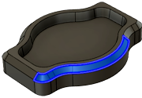

| Режим выбора
|
Возможность выбора области обработки по цепочкам непрерывных граней, отдельных граней или контурных пар.
 |
 |
Режим привода — поверхности
Режим выбора — грани
Выберите непрерывные поверхности. |
Режим привода — поверхности
Режим выбора — вручную
Выберите отдельные поверхности. |
 |
 |
Режим привода — контуры
Режим выбора — контурные пары
Выберите нижний и верхний контуры
для определения боковой траектории.
Сначала выберите нижнюю цепочку. |
Режим привода — контуры
Режим выбора — вручную
Выберите отдельные кромки
для определения боковой траектории.
Сначала выберите нижнюю цепочку. |